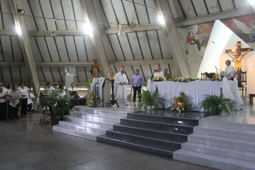

Horarios de misa:
Lunes a Viernes: 6:00pmSábados: 5:30pm
Domingos: 7:00am, 9:00am, 6:00pm.
Horarios de Confesiones:
Miércoles: 4:00pm a 5:00pmSábados: 4:00pm a 5:00pm
Donaciones:
Presione aquí para hacer una donación.Dios ama al que da con alegría. 2 Corintios 9:7

sanmartindeporres@gmail.com